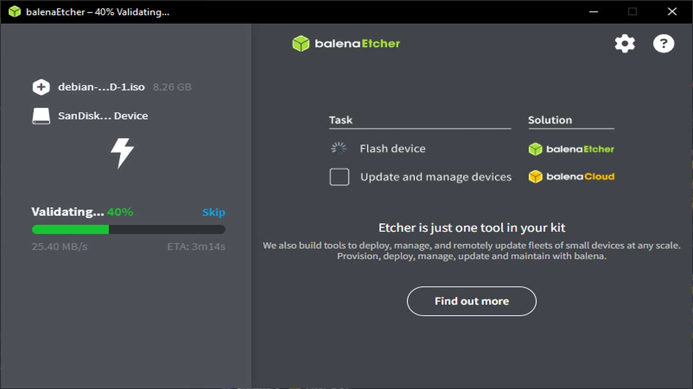
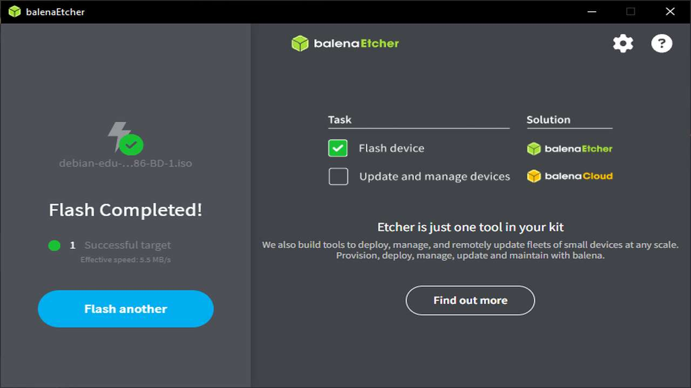

Linux instalācija: Debian
32-bitu sistēmas vēl var eksistēt!
32-bitu sistēmas vēl var eksistēt!
Vēlējos veikt īstu instalāciju, tāpēc turpinot sava vecā klēpjdatora funkciju atjaunināšanu un uzlabošanu, nolēmu to izmantot arī šim projektam, tādējādi dodot tam svaigu Linux OS, no kura pat varētu būt iespējams pieslēgties internetam bez problēmām. Neskatoties uz to, arī vēlējos atstāt Windows XP, tāpēc nolēmu izveidot MultiBoot uzstādījumu, lai varētu izmantot abus OS.
Bet kādu tieši Linux distribūciju instalēt? Sākumā domāju instalēt samērā sarežģīto, bet spēcīgo Arch Linux, bet pēc izpētes, izrādījās ka tā vairs neatbalsta 32-bitu sistēmas, kas ir viena no mana klēpjdatora limitācijām. Ir arī pieejama neoficiālā 32-bitu versija, ArchLinux32, bet vēlējos oficiāli atbalstītu un samērā izplatītu distribūciju.
Tāpēc, izvēlējos Debian 12, kas nav pati jaunākā versija (tagad ir arī pieejama Debian 13), taču tai līdz šim ir oficiāls atbalsts, tā atbalsta 32-bitu sistēmas, un tā ir arī plaši izplatīta. Vēl viens no plusiem šai OS bija tas, ka, instalācijas laikā, varēja izvēlēties darbvirsmas vidi, ko vēlas instalēt uz sistēmas.
Zemāk ir neliels atkārtojums no pagājušā projekta: visa tā pati informācija par klēpjdatoru uz kura instalēju arī Windows XP.
Izlaists nedaudz pirms 2010. gada septembra, šis klēpjdators jau tajā laikā nebija pats spēcīgākais. Tomēr, domāju, ka augsti personalizējamais Linux ļautu man arī dažados veidos uzlabot lietotāja pieredzi, un, cerams, uzlabot tā ātrumu. Sakarā ar to, ka, pirmstam, jau biju uzlicis SSD, instalācijai arī nebūtu jābut ilgai. Šīs ir datora specifikācijas:

| Detaļa | Modelis |
|---|---|
| Procesors | Intel Celeron 900 (32-bitu!) |
| Iebūvētās grafikas procesors | Intel GMA 4500MHD |
| RAM | 2 GB, DDR3 1333MHz |
| Displejs | 15.6 collas, 1366×768 izšķirtspēja |
| Cietais disks | 256 GB GIGABYTE SATA SSD |
| Bezvadu pieslēgums | Athernos Wireless-N 802.11n Mini-Card |
| Dell Wireless 365 Bluetooth 2.1 Internal Card | |
| Porti un pieslēgumi | DVD RW diskdzinis |
| 3 USB 2.0 porti | |
| VGA displeja ports | |
| Audio porti | |
| Atmiņas karšu lasītājs | |
| Papildus | Iebūvēta webkamera |
| Baterija | 48Wh |
| Operētājsistēma (oriģinālā) | Windows 7 |
Jebkurai OS instalācijai vajadzīgs instalācijas datu nesējs, no kura iegūt OS failus. Lai izveidotu instalācijas datu nesēju, jāpiemeklē 3 lietas: USB datu nesējs, OS ISO attēls, kā arī programma, kas uzstādīs attēlu uz datu nesēja.
Vieglākā daļa - datu nesējs. Izmantoju to pašu 16GB SanDisk datu nesēju. (bildītes var skrullēt!)
Debian 12 ISO attēlu nebija viegli atrast, jo tā nav pati jaunākā versija, un arī nav viena no atbalstītajām procesoru arhitektūrām. Tomēr, pēc nepareizā OS instalācijas sākšanas (Debian 12 Edu), atradu īsto attēlu, un to lejupielādēju.
Pēdējā lieta, kas vajadzīga, ir attiecīgā programma instalācijas nesēja izveidošanai. Viena no ērtākajām programmām, ar kuru esmu saskāries ir BalenaEtcher, kas šoreiz bez problēmām uzstādīja attēlu uz zibatmiņas.



Lai izveidotu MultiBoot uzstādijumu, uz datora diska jābūt vairākiem nodalījumiem (partitions), taču instalējot Windows XP nebiju paredzējis, ka tā darīšu, un izveidoju tikai vienu nodalījumu, kurā arī instalēju Windows XP.
Vienīgā mana opcija lai šo izlabotu, bija izveidot vēl vienu datu nesēju ar speciālu nodaļu rediģēšanas sistēmas instalāciju, kuru nevajag instalēt uz iekšējā diska un var palaist ārpus OS. Ar to es varētu samazināt Windows nodalījuma lielumu, jo citādi to nav iespējams izdarīt no Windows.
Atkārtoju tos pašus soļus, kā veidojot OS instalācijas nesēju, tikai ar GParted live OS attēlu. Šai aplikācijai arī vajadzēja 32-bitu versiju, bet tā vēl ir pieejama oficiālajā mājaslapā.
Izvēloties GParted kā boot device, veicu 3 soļus: samazināju Windows nodalījumu uz 62.5GB, izveidoju 4GB swap nodalījumu Linuxam, un visu atlikušo diska daļu (157GB) atvēlēju Debian.
Datora ieslēgšanas laikā iestatot USB datu nesēju kā boot device, dators ielādējas Debian instalētājā. Izvēlējos grafisko instalēšanas veidu jo vēl nebiju gluži gatavs visu darīt caur komandu līniju.
Pēc tā, iestatīju valodu, reģionu, tastatūras izvietojumu, utt.
Pēc neilgas gaidīšanas Debian vēlējās lai es izvēlos tīkla karti, un pēc tā, pievienojos savam Wi-Fi.
Tālāk, iestatīju datora nosaukumu, administratora paroli, kā arī sava profila vārdu, lietotājvārdu un paroli. Svarīgi pamanīt to, ka ievadīju nepareizo lietotājvārdu pēc mājasdarba kritērijiem, tāpēc tas būs vēlāk jāpārmaina. 😪
Turpinot instalēšanu, tiku pie diska nodalījumu izveides daļas. Šeit, izvēlējos manuālo nodalīšanu.
Tālāk, iestatīju pirmstam izveidotās nodaļas uz pareizo tipu, 4GB nodalījumu kā swap, un lielo 157GB nodalījumu kā "/" mapi (visai sistēmai) ext4 formātā.
Windows nodalījumu atstāju kā "do not use", lai Debian instalētājs neko ar to nedarītu.
Ar to, diska nodalījumi, beidzot, ir pabeigti!
Pēdējos soļos Debian instalēšanā vajadzēja konfigurēt pakotņu pārvaldnieku, kas ir aplikācija, kas, galvenokārt, atbilst par gandrīz visu aplikāciju lejupielādēšanu, instalēšanu un atjaunināšanu.
Vispirms, izvēlējos, ka vēlos izmantot internetu kā papildus avotu pakotnēm, uzstādīju savu valsti un izvēlēto serveri, no kura lejuplādēšu pakotnes.
Tālāk izvēlējos nepiedalīties anonīmu datu nosūtīšanā par instalētajām pakotnēm, un pakotņu pārvaldnieks tika konfigurēts!
Izvēlējos KDE Plasma darbvirsmas vidi, jo pirmstam jau esmu izmantojis GNOME, un vēlējos izmēģināt ko jaunu.
Visbeidzot, instalējot 'grub' boot loader (starta aplikācija, kas pie katras datora ieslēgšanas ļauj izvēlēties OS kuru startēt), tas atrada manu Windows XP un es apstiprināju ka tā ir vienīgā cita OS kas ir uz diska, kā arī izvēlējos iekšējo disku 'grub' uzstādīšanai.
Debian tagad ir instalēts uz datora! 🙌🎉
Tagad, pirmajā sistēmas palaišanā varam redzēt 'grub' izvēlni, kur var izvēlēties Debian jeb Windows XP kā sistēmu kurā vēlos šobrīd atrasties, bet ja neko neizvēlās, tad 3 sekunžu laikā automatiski izvēlās Debian.
Kamēr darbvirsmas vide vēl nav atvērusies, var redzēt kā dažādi servisi slēdzas iekšā.
Kad beidzot tiek KDE Plasma darbvirsmas vidē (tālāk KDE), mani sagaida autentificēšanās ekrāns, kurā ierakstu savu paroli. Tad, KDE nedaudz padomājā un atvēra manu darbvirsmu.
Obligāti, protams, bija nedadudz pielāgot sistēmas izskatu savām vēlmēm, tāpēc nomainīju krāsu režīmu uz tumšo, un pārvietoju aplikāciju līniju uz augšu, pievienoju un personalizēju pulksteni un nomainīju fona attēlu.
Personalizācija man aizņēma diezgan ilgu laiku, jo nekādi nevarēju pārvietot aplikāciju līniju un vajadzēja to vairākas reizes izdzēst, bet galā esmu apmierināts ar rezultātu!
Sakarā ar to, ka instalēšanas laikā ievadīju nepareizu lietotājvārdu, man tas bija jānomaina, bet KDE iestatījumi man nedaudz ar to palīdzēja.
Vispirms izveidoju jaunu pagaidu lietotāju 'temp' ar administratora privilēģijām, jo kontu, kurā pašlaik atrodies, nevar rediģēt. Ieejot jaunajā 'temp' kontā, aizgāju atkal uz iestatījumiem, un nomainīju pirmā profila lietotājvārdu uz pareizo.
Tad, atgriezos uz savu kontu un izdzēsu 'temp' kontu, jo tas vairs nebija vajadzīgs.
Viens no pirmajiem uzdevumiem - uzstādīt vairākas valodas un uzrakstīt īsu tekstu. KDE iestatījumos atradu tastatūras izvietojumu sadaļu, un pievienoju latviešu un vācu valodu. Tad, ieslēdzu iebūvēto KWrite aplikāciju, kas strādā kā Notepad uz Windows un uzrakstīju īsu tekstu.
Draiveru saraksts kā Windows Device Manager īsti neeksistē Linux sistēmās, toties izmantojot Device Viewer aplikāciju, kas nāk ar KDE, varēju apskatīt visas atpazītās daļas savā sistēmā, un varēju tās visas redzēt ar pilno informāciju par katru no tām.
Izmantojot sudo apt update komandu ar administratora privilēģijām, var
pārbaudīt vai pilnīgi visas pakotnes, kas instalētas sistēmā ir atjauninātas, un kā redzams attēlā pie zaļās
līnijas, tā tas ir. Vēl arī var redzēt pēdējā attēlā, ka iebūvētā aplikāciju instalēšanas aplikācija Discover
arī saka, ka atjauninājumu nav.
P.S. Visas komandas, kuras sākas ar sudo izmanto administratora privilēģijas!
Ja lietotājam tādas nav, tad izmantojot su - komandu terminālī, un ierakstot
root lietotāja paroli, var iegūt administratora privilēģijas tajā konsoles lodziņā!
Debian kopā ar KDE jau nāca ar daudzām programmām, ieskaitot visu LibreOffice aplikāciju komplektu, tapēc ātri izmēģināju LibreOffice Writer, kas ir analogs MS Word.
Sistēma arī nāca ar jau instalētu Firefox ESR versiju, kas domāta ilgākam atbalstam, tapēc man tikai atlika
lejuplādēt vēl vienu pārlūkprogrammu. Izvēlējos Falkon, jo tā strādā uz 32-bitu sistēmām ar samērā labu ātrumu, tapēc
instalēju to
izmantojot 'apt' pakotņu pārvaldnieku un
sudo apt install falkon
komandu.
Tālāk instalēju Thunderbird e-pasta aplikāciju, jo tā ir viena no pēdējām e-pasta aplikācijām, kas atbalsta gan 32-bitu sistēmas, gan arī Microsoft OAuth2 autentifikāciju e-pastiem, kurus atbalsta Microsoft Outlook sistēma. Autentificējos savā universitātes e-pastā un ieguvi informāciju par nākamo pārbaudes darbu.
sudo apt install falkon
komandu, kas ieinstalēja i686 (32bitu) pakotni ar versiju "22.12.1-2".
sudo apt install thunderbird
komandu, kas ieinstalēja i686 (32bitu) pakotni ar versiju "1:140.5.0esr-1~deb12u1".
Audio un video aplikācijas jau bija arī uzstādītas kā noklusējuma aplikācijas. Audio faili atvērās JuK aplikācijā, bet video faili atvērās Dragon Player aplikācijā.
Arī attēlu rediģēšanas aplikācija bija uzreiz pieejama sistēmā: GIMP, tieši tā pati aplikācija, kas man bija ieinstalēta uz Windows XP.
Videokonferencēm nevarēju ieinstalēt visizplatītākās programmas, jo tās vairs neatbalsta 32-bitu sistēmas, toties sanāca ieinstalēt Linphone, kas ir mazāk izplatīta, bet funkcionāla video konfereņču aplikācija. Arī pamēģināju izmantot Discord caur Falkon pārlūkprogrammu, bet sanāca tikai izmantot audio funkcionalitāti, jo sistēmai sāka pietrūkt RAM.
Koda redaktoram ieinstalēju Geany aplikāciju, kas bija samērā funkcionāla un atbalstīja 32-bitu arhitektūru. Kā redzams attēlos, vispirms izveidoju C++ Hello World aplikāciju un to kompilēju un ieslēdzu. Aplikācijai bija arī iespēja nomainīt teksta iekrāsošanas krāsas. Tad, izmēģināju Python funkcionalitāti.
sudo apt install linphone
komandu, kas ieinstalēja i686 (32bitu) pakotni ar versiju "4.4.10-3".
sudo apt install geany
komandu, kas ieinstalēja i686 (32bitu) pakotni ar versiju "1.38-1+b1".
Sakarā ar 32-bitu problēmu, nevarēju ieinstalēt Steam vai kādu spēli no turienes (lai arī izmēģinātu Proton), tāpēc ielādēju kaut ko prastāku: Minetest.
Šī spēle ir ļoti līdzīga vecajām Minecraft versijām, un tai pat ir multiplayer opcija, bet to īsti nevarēju izmēģināt. Spēle diemžēl arī nestrādāja pārāk labi, bet bija interesanti redzēt citu Minecraft interpretāciju.
sudo apt install minetest
komandu, kas ieinstalēja i686 (32bitu) pakotni ar versiju "5.6.1+dfsg+~1.9.0mt8+dfsg-2".
Visbeidzot, viena no lietām, ko vēlējos izdarīt, bija personalizēt 'grub' izvēlni, jo esmu internetā redzējis daudzus attēlus ar interesantiem izskatiem.
Atradu internetā GitHub repozitoriju ar sarakstu ar dažādiem motīviem, kur atradu motīvu, kas man patika: 'crt-amber'. Tas arī izskatījās nedaudz pēc Fallout spēles monitoriem, kas man ļoti patika.
To lejupielādēju, un tad, "/boot/grub/" izveidoju jaunu mapi "themes". Tajā ieliku failus no motīva arhīva faila.
Tad, lai pievienotu motīvu konfigurācijai, atvēru konfigurācijas failu konsolē, un pievienoju informāciju par motīvu, un atjaunināju 'grub', lai jaunā konfigurācija būtu pievienota.
Restartējot datoru, mani sagaidīja pievienotais motīvs! 🎉
cd ..cd bootcd grubmkdir themesmv home/viktors-k/Download/crt-ambertheme themessudo nano /etc/default/grub,GRUB_THEME=/boot/grub/themes/crt-amber-theme/theme.txt.sudo update-grub.Man ļoti interesanti bija izmēģināt jaunu darbvirsmas vidi uz Linux, jo pirmstam jau biju daudzreiz izmanotjis GNOME. KDE Plasma bija ļoti personalizējams, bet man šķita, ka tomēr tas nav tik uzticams kā GNOME. Iebūvētā ekrānšāviņu programma Spectacle bieži pārtrauca strādāt, un vienā brīdī atsāku bildēt ekrānu ar telefonu. Kopumā, man liekas instalēt Linux uz datora nav grūti un ir pat interesanti, bet dažreiz nedaudz jāpiepūlās lai viss strādātu.
Un protams, neiesaku instalēt tik ļoti jaunu OS uz 15 gadus veca datora, kombinācija strādā, bet tā nav efektīvākā konfigurācija, kas iespējama.